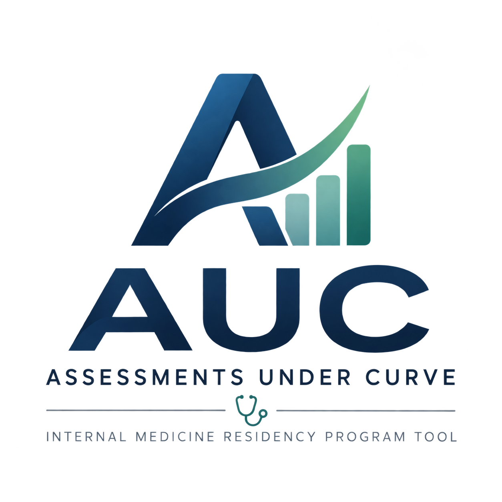

AUC: Assessments Under Curve
A local-first feedback tool for internal medicine residency programs. Log CCC observations, track follow-ups, and draft ACGME milestone summaries with an AI that runs on your own machine and has to quote your notes word-for-word.
Download
Version 1.0.1 · PGY-1 · Release notes · MIT License
AUC installs on Linux.
Choose the file for the computer that will run AUC.
Not on Ubuntu, or the .deb won't open? Use the AppImage instead: ARM · Intel/AMD.
Which file do I need?
| Your machine | File | Size |
|---|---|---|
| NVIDIA DGX Spark or HP ZGX Nano (ARM) | AUC-Installer-1.0.1-linux-aarch64.deb | 3.2 MB |
| Ubuntu PC (Intel or AMD) | AUC-Installer-1.0.1-linux-x86_64.deb | 3.3 MB |
| Other Linux, or if the .deb won't open (ARM) | AUC-Installer-1.0.1-linux-aarch64.AppImage | 73 MB |
| Other Linux, or if the .deb won't open (Intel or AMD) | AUC-Installer-1.0.1-linux-x86_64.AppImage | 75 MB |
| Server or scripted install (no installer) | auc-1.0.1.tar.gz auc-1.0.1.tar.gz.sha256 |
1.8 MB |
Opening the installer
- .deb: double-click it to install, then open AUC Installer from your apps. From a terminal:
sudo apt install ./AUC-Installer-*.deb - .AppImage: right-click → Properties → allow it to run as a program, then double-click. From a terminal:
chmod +x AUC-Installer-*.AppImageand run it.
Installing over SSH, or on a server
The installer also runs without a window, which is handy for a DGX Spark you reach over SSH:
wget https://github.com/SaltShaker87/resident-evaluations-auc/releases/download/v1.0.1/AUC-Installer-1.0.1-linux-aarch64.deb
sudo apt install ./AUC-Installer-*-linux-aarch64.deb
auc-installer --headless install --model qwen3.5:9b --network local
auc-installer --headless status
Pick the --model that suits your graphics memory (see What you need). Later, auc-installer --headless update updates AUC and uninstall removes it but keeps your data.
To skip the installer entirely, download the .tar.gz and its .sha256, check the archive, then follow the manual setup in the README:
sha256sum -c auc-*.tar.gz.sha256
Features
📝 Quick-Add Notes
Jot observations during CCC meetings, tagged with ACGME domain, strength or concern, and priority.
✅ Follow-Ups
A checklist of action items for each resident, plus a dashboard of everything still open.
🤖 AI Summaries
One click drafts all 21 ACGME sub-competencies, each with a suggested milestone level and supporting quotes, using a model on your own machine.
🔍 Evidence-Checked
Every quote is verified word-for-word against your notes before you see it. A section whose quotes don't check out is withheld, not shown.
🎯 Milestone-Grounded
Each note is matched to the sub-competencies it's about, by keyword or by searching the ACGME reference material. On a DGX Spark, NVIDIA Nemotron does the searching.
✏️ Edit & Approve
Review each section, adjust the narrative or level, and save the final version.
📋 Meeting Capture
Record what the committee recalled unprompted, what you had to surface, and what it changed, then export de-identified CSVs for study.
📥 MedHub CSV Import
Bring in evaluation comments from a MedHub CSV export. They're matched to sub-competencies and summarized alongside your own notes.
🔑 Password & Backups
A shared password guards all resident data. Download a full backup in one click, and a scheduled backup runs on its own.
Suggested levels are drafts. They are for Clinical Competency Committee discussion, not final determinations.
Stays on Your Machine
AUC runs entirely on the computer you install it on. Resident notes, photos and summaries live in one local database, and the AI models run locally too. Nothing is sent to a cloud service.
The installer holds to this: it refuses to point AUC's AI services at anything other than the machine itself. Other computers on your network can connect only if you allow it during setup, and updates never touch your data.
AUC is free and open source under the MIT License, so your IT team can read every line of the code before it goes anywhere near resident data.
What You Need
- Linux: Ubuntu 22.04 or newer, or an NVIDIA DGX Spark / HP ZGX Nano. On other distributions, use the AppImage. macOS and Windows support is planned.
- An internet connection while installing. The installer downloads AUC, Ollama and the AI models.
- For AI summaries (optional): a graphics card. The installer picks a model by its memory: 8–15 GB
qwen3.5:4b, 16–32 GBqwen3.5:9b, over 32 GB NVIDIA Nemotron 3.5 Lightning. Everything else in AUC works without it. - On a DGX Spark: a free NVIDIA NGC account key, used once to download the Nemotron models.
- Not needed: Python or Node.js. The installer brings its own.
How the Installer Works
- Checks your computer: processor, graphics card, free disk space, internet, and whether AUC is already installed. If something doesn't fit, it says so before changing anything.
- Asks three questions: AI summaries on or off (and which model), whether other computers on your network may connect, and on a Spark, your NGC key.
- Installs everything, starts AUC and opens it in your browser at
localhost:3000. AUC starts with the computer from then on. - Open the installer again any time to update, repair or remove AUC.